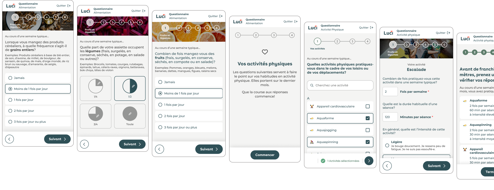
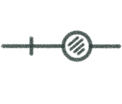
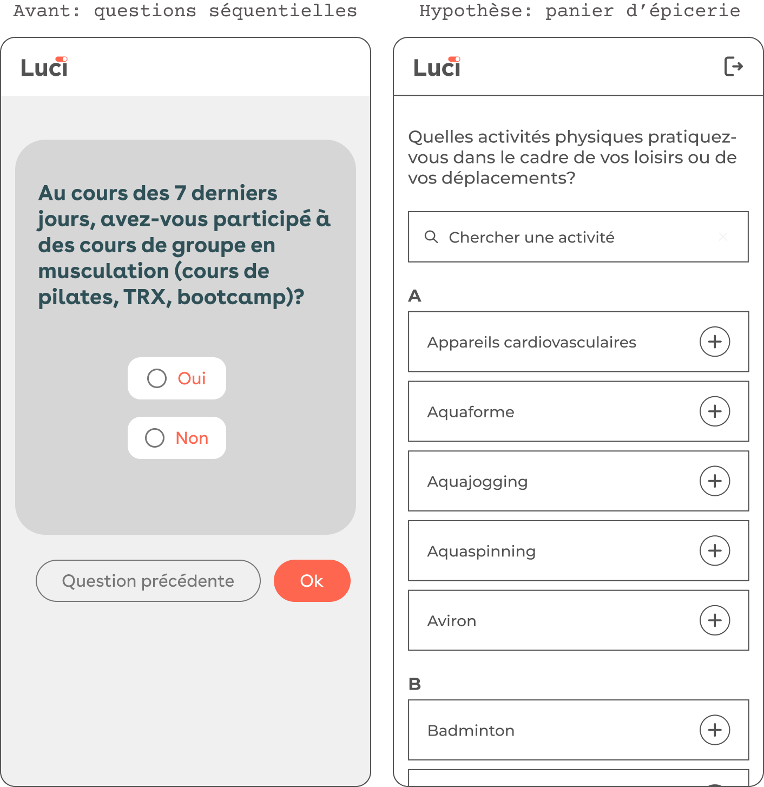
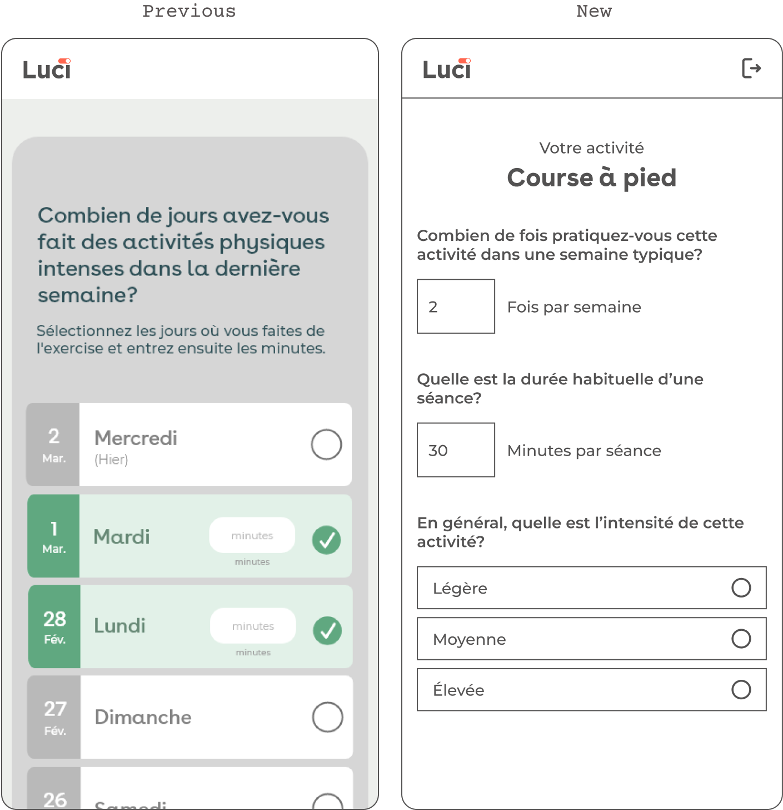
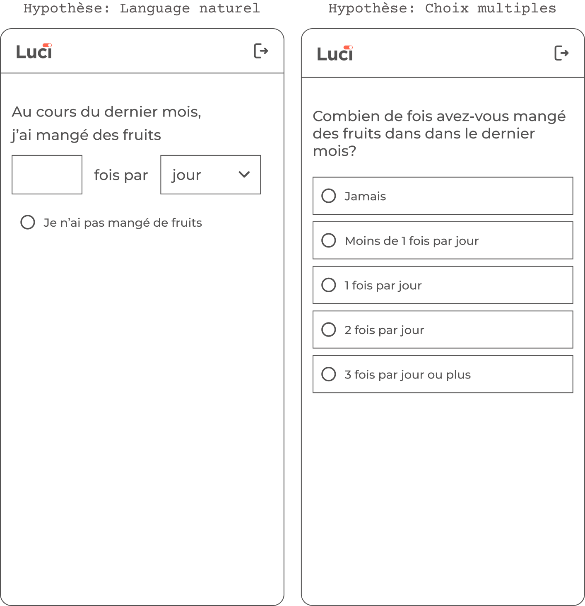
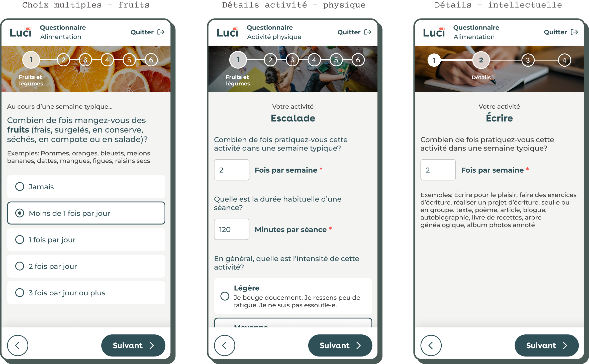

Luci helps Canadians adopt healthier lifestyles. A key feature is a self-assessment questionnaire where users report their habits across three areas: physical activity, nutrition, and cognitive stimulation.
These questionnaires are essential for helping users understand their next steps. However, they were long, ambiguous, and difficult to understand. As the first step in the journey, they slowed users down and discouraged engagement.
Simplify the questionnaire experience to reduce completion time and improve the user experience, while maintaining the robustness of the data.
A series of user tests at the start of the initiative helped me observe and validate the main friction points. Watching users move through the flow revealed an experience that felt demanding, long, and ambiguous.
Based on the user tests, I also created a proto-persona.
Beatriz, 52, leads a busy life but wants to take better care of her health. She’s looking for simple, clear tools to understand and improve her habits without getting lost in complexity. Not very comfortable with technical interfaces, she prefers solutions that are reliable and easy to use.
The questionnaires are essential in helping Luci users direct their efforts. For this reason, we paid particular attention to completion rate and completion time. We also knew that the current experience was not optimal and was causing frustration.
Reduce the cognitive load involved in reporting activities?
Reduce the burden on memory by asking for fewer details, without compromising data quality?
Reduce ambiguity and increase flow for users who are less comfortable with digital interfaces?
The following hypotheses would allow us to see if we can solve the problem.
The initial version of the questionnaires presented sequential yes-or-no questions to identify activities.
We tested an activity catalog with a search function and the ability to add activities to the "basket" before moving to the next step.

Weekly frequencies and minutes, instead of daily minutes and portions, would be less taxing on memory.
We deliberately sacrificed a level of precision to simplify the task: since our scores don't require daily detail, a weekly estimate is sufficient.
Fill-in-the-blank sentences with natural language would be more intuitive.
Since our audience was not tech savvy, we tested a fill-in-the-blank response mode, and we tested it against a traditional multiple-choice structure.

The initial version of the questionnaires presented sequential yes-or-no questions to identify activities.
We tested an activity catalog with a search function and the ability to add activities to the "basket" before moving to the next step.

Weekly frequencies and minutes, instead of daily minutes and portions, would be less taxing on memory.
We deliberately sacrificed a level of precision to simplify the task: since our scores don't require daily detail, a weekly estimate is sufficient.

Fill-in-the-blank sentences with natural language would be more intuitive.
Since our audience was not tech savvy, we tested a fill-in-the-blank response mode, and we tested it against a traditional multiple-choice structure.
To test these hypotheses, we launched user tests. We set up in a community center and invited retirees to complete our questionnaire in between activities. We also tested with other users.
This hypothesis was true. Users found activities easily via search or the list. Completion time was significantly reduced.
This hypothesis was true. Users had no difficulty providing an average of weekly frequencies or minutes.
This hypothesis was false. Multiple choice outperformed natural language through its simplicity, familiarity, and readability.

Qualitative evaluations and user testing revealed that the average completion time decreased from 28 to 15 minutes. Users also reported a better understanding of the questions.
In the six months following launch, the questionnaire completion rate increased from 29% to 53%. This improvement reflects both enhancements to the questionnaire design and other factors, such as changes to the onboarding flow.
Even when accounting for these factors, the results show that the redesign successfully simplified the experience, creating a stronger foundation for future iteration and optimization.
I have to think more with [fill-in-the-blank sentences].
There are too many clicks. [Multiple choice] is simpler, faster.